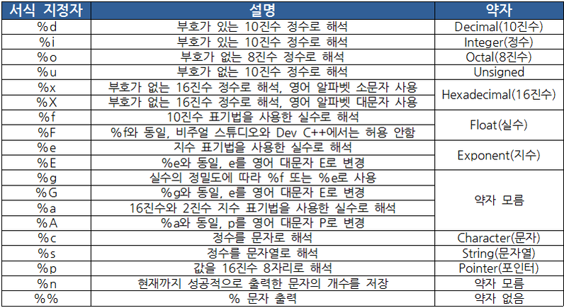

C언어의 서식지정자 (Format Specifiers)
"서식 지정자"는 컴퓨터가 어떤정보를 어떻게 해석할지 결정해주는 것을 말합니다.
예를 들어 정수 10은 10진수로 해석하면 10이지만, 8진수는 012, 16진수로 해석하면 0xA,
ASCII로 해석하면 \n(new line)이 됩니다.

정수 (%d) 출력
#include <stdio.h>
int main() {
printf("%d + %d = %d \n", 10, 5, 10+5);
return 0;
}
10진수, 8진수, 16진수 출력 (%d, %o, %x)
#include <stdio.h>
int main() {
printf("10진수 %d는 8진수로는 %o이고 16진수로는 %x입니다 \n", 10, 10, 10);
return 0;
}
실수(%d) 출력
#include <stdio.h>
int main() {
printf("실수 출력: %f \n", 0.5);
printf("6자리 실수 출력 : %f \n", 0.123456);
printf("실수를 정수로 출력 : %d \n", 0.5);
return 0;
}
문자(%c)와 문자열(%s) 출력
#include <stdio.h>
int main() {
printf("a의 대문자 : %c \n", 'A');
printf("a의 대문자 : %c \n", 65);
printf("%s %c 입니다. \n", "a의 대문자", 'A');
return 0;
}
소수의 과학표기법
#include <stdio.h>
int main() {
printf("%f \n", 0.000123);
printf("%f \n", 0.0001236);
printf("%e \n", 0.000123);
printf("%E \n", 0.0001236);
return 0;
}
서식시정자의 플래그, 폭, 정밀도, 특별표시문자 옵션
- 폭
#include <stdio.h>
int main() {
printf("|%10d|\n", 20);
printf("|%010d|\n", 20);
return 0;
}
- 우측정렬(+)과 좌측 정렬(-)
#include <stdio.h>
int main() {
printf("|%6d|\n", 20);
printf("|%+6d|\n", 20);
printf("|%-6d|\n", 20);
return 0;
}
- 정밀도
#include <stdio.h>
int main() {
printf("|%.6d| \n", 20);
printf("|%.3f| \n", 0.123556);
printf("|%.10f| \n", 0.123556);
printf("|%010f| \n", 0.123556);
return 0;
}
- 특별표시문자
#include <stdio.h>
int main() {
printf("%o\n", 0721);
printf("%x\n", 0xf1);
printf("====================\n");
printf("%#o\n", 0721); // 8진수이면 앞에 0을 붙임
printf("%#x\n", 0xf1); // 16진수 소문자 출력이면 앞에 0x를 붙임
return 0;
}
% 출력하기
#include <stdio.h>
int main() {
printf("경재성장률은 %d %% 입니다.", 10);
return 0;
}